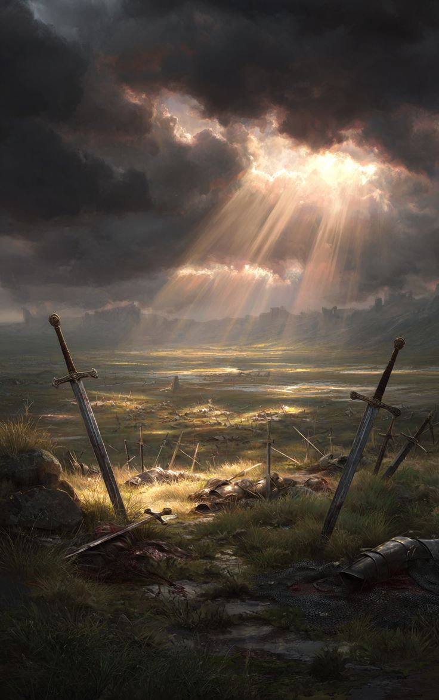

You did not plan for this. You called for them — and they came. More than you expected. More than the Usurper expected. More than this hall has held in a generation.
When you speak, your voice carries not because you are loud but because the room wants to hear it. And when the crowd surges forward, it is not a mob — it is a tide, purposeful and vast, and the Usurper's lines simply dissolve before it.
The throne is not seized. It is reclaimed. By you, yes — but not by you alone. The hands that helped you fight your way back here belong to farmers and soldiers and people who had every reason to stay home and didn't. They chose this. They chose you.
What emerges from this day is not the kingdom you lost. It is something newer, less certain, and — if you are honest — more fragile. Rule built on the goodwill of people who remember exactly how much they gave requires you to remember it too.
The council you form in the months ahead is not merely symbolic. The voices that once filled this hall with uprising must now fill it with counsel. You listen. It does not always come naturally. You listen anyway.
The throne endures — not because one person holds it, but because many people chose to raise it back up.
